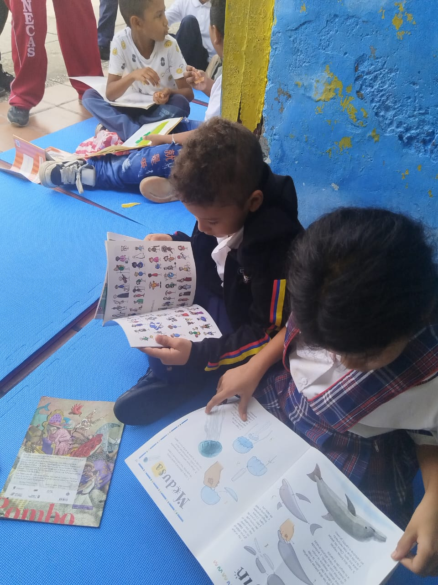
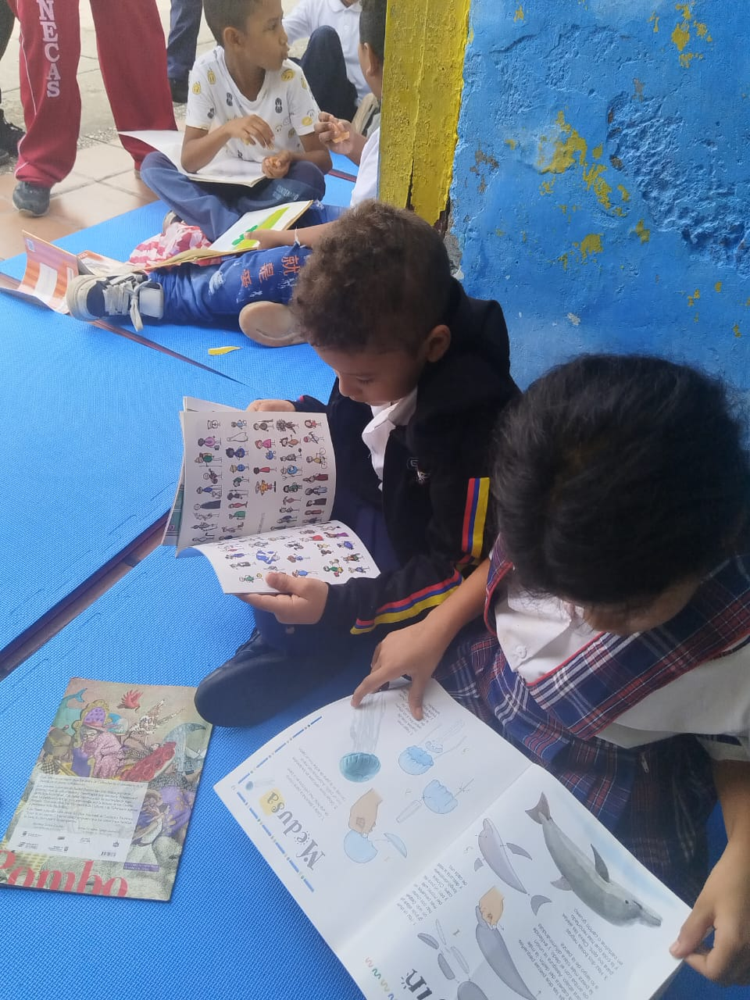
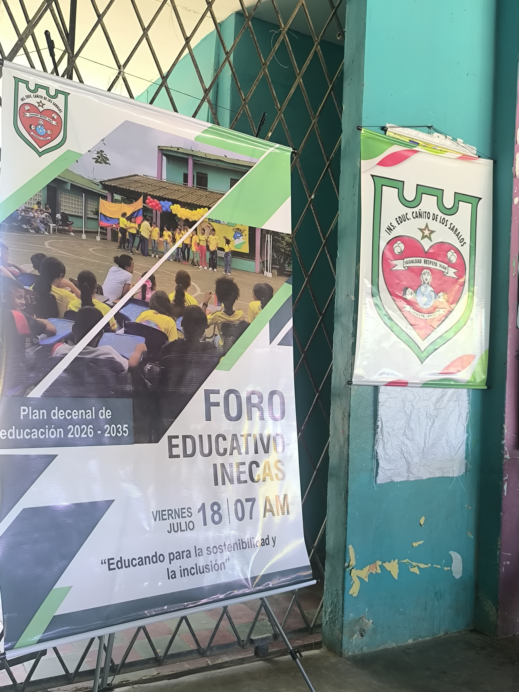
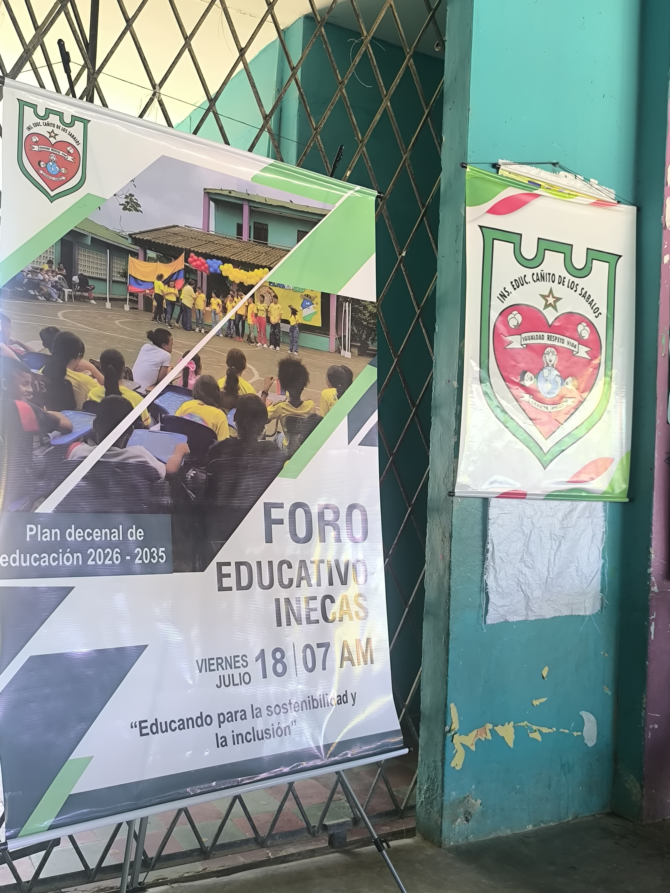

En la Escuela
Rincón de la lectura
üìÖ Publicado el 15 de agosto 2025 - ‚úçÔ∏è Docentes sede santa Mar√≠a

 

En un ambiente lleno de alegría, colores y entusiasmo, el pasado 15 de agosto se vivió una jornada inolvidable en la sede Santa María de la IE Cañito de los Sábalos, con la apertura del esperado Rincón de la Lectura, un espacio mágico donde los niños y niñas se sumergen en el maravilloso mundo de los libros. Con cuentos, risas y mucha creatividad, los estudiantes disfrutaron de un momento especial donde la lectura no solo fue aprendizaje, sino también juego, descubrimiento y libertad. Entre almohadones, estanterías llenas de historias y un ambiente cálido, los pequeños lectores dejaron volar su imaginación y compartieron sus aventuras literarias con sus compañeros y docentes. “La lectura es una puerta abierta a otros mundos. Este rincón es el inicio de muchos viajes que nuestros niños y niñas emprenderán desde la escuela”, expresó una de las docentes encargadas del proyecto. El Rincón de la Lectura forma parte de las estrategias pedagógicas de la institución para fortalecer los procesos de comprensión lectora, fomentar el amor por los libros desde la primera infancia y brindar un entorno estimulante para el desarrollo integral de l@s estudiantes. Felicitaciones a toda la comunidad educativa de la sede Santa María por este bello esfuerzo que ya empieza a sembrar frutos en los corazones lectores de nuestros niños y niñas.
Foro educativo institucional
üìÖ Publicado el 18 de julio 2025 - ‚úçÔ∏è Docente Ivan Bracamonte
 

El día viernes 18 de Julio se realizó el primer foro educativo INECAS 2025 "educando para la sostenibilidad y la inclusión" en dónde se tocaron estas dos temáticas importantes en el ámbito educativo con miras a la construcción del próximo plan decenal de educación. Contamos con la presencia de toda la comunidad educativa y con las ponencias del Magister Cesar Martinez Hernández "la inclusión de estudiantes migrantes en la escuela", la Magister Claudia Salazar "raíces, diversidad e inclusión en la región caribe" y el especialista Félix Vargas con la ponencia "vivencia del proyecto ambiental en la gestión de residuos sólidos". Este fué un espacio de reflexión y debate enriquecedor. Gracias a todos los participantes de este maravilloso evento. #INECAS #iecañitodelossabalos #cañito #cerete #AlcaldiaDeCerete #GobernacionDeCordoba #foroeducativo2025